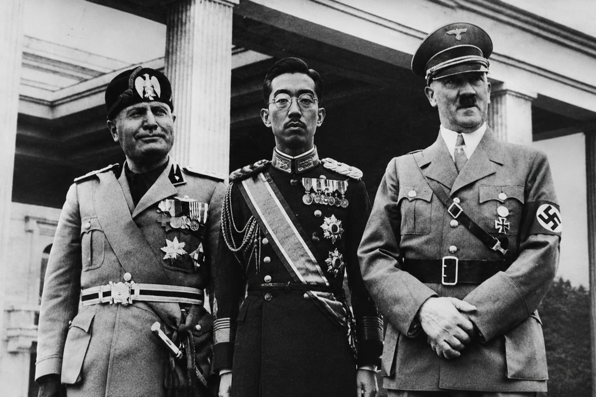

O Início do Conflito

A Segunda Guerra Mundial (1939–1945) foi o maior conflito armado da história da humanidade. Suas raízes estão ligadas ao desfecho da Primeira Guerra Mundial e à ascensão de regimes totalitários na Europa. O estopim ocorreu em 1º de setembro de 1939, quando a Alemanha invadiu a Polônia, forçando o Reino Unido e a França a declararem guerra.
As Forças em Confronto

O mundo se dividiu em dois grandes blocos militares: os Aliados (liderados principalmente por Reino Unido, União Soviética e Estados Unidos) e o Eixo (composto por Alemanha, Itália e Japão).
O Desfecho e as Consequências

Após anos de batalhas intensas na Europa, no Pacífico e no Norte da África, a guerra chegou ao fim em 1945. O conflito deixou marcas profundas, resultando na criação da ONU (Organização das Nações Unidas) e redesenhando o mapa geopolítico mundial.